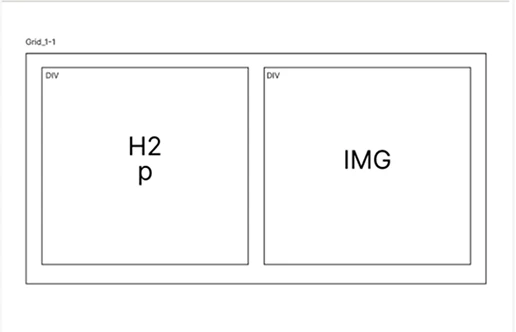

1. Semester portfolio
Trelloboard
Jeg startede med at lave et trelloboard til mit portfolio projekt. Trelloboarden gjorde at jeg havde styr på de ting jeg skulle have med helt fra research til produktion. Det skabte mig et godt overblik over tid og gav mig et godt overblik.
Styletile og likert test
Jeg lavede et styletile hvor jeg gerne ville have at man skulle ku visualisere at sitet skal være enkelt og moderne. Derfor lavede jeg en likert test hvor jeg bla. spurgte ind til om styletilet fremstår enkelt og moderne, og det vidste sig at størstedelen var enig i det. Det bekræfter mig i at mine valg af farver, layout og fonte har haft den ønskede effekt.
Sitemap
For at skabe en klar struktur og et godt overblik over min portfoliowebside, har jeg udarbejdet et sitemap, som viser sidens opbygning og navigation. Formålet med sitet er at præsentere mit arbejde og min udvikling gennem studiet, samtidig med at det skal være let at navigere.
Prototype og layoutdiagramer
For at skabe overblik over det visuelle og det praktiske lavede jeg en prototype og layoutdiagrammer for at gøre det nemmere for mig selv når det kom til at kode de forskellige sider. Prototyperne har hjulpet mig med at se det visuelt og få en fornemmelse af, hvordan man kan sætte tingene op på en overskuelig og brugervenlig måde. Layoutdiagrammerne har hjulpet mig med at strukturere min HTML-kode ved at give et klart overblik over, hvordan indholdet skulle opdeles i sektioner og elementer.
5 sekunders test
For at sikre, at budskabet på forsiden stod klart med det samme, lavede jeg en 5-sekunders test. Formålet var at undersøge, om det var tydligt at se hvem afsenderen er, og hvad siden handler om. Testen bekræftede mig i at forsiden fungerede det var tydligt for brugeren at se hvem afsender er og hvad siden handler om.